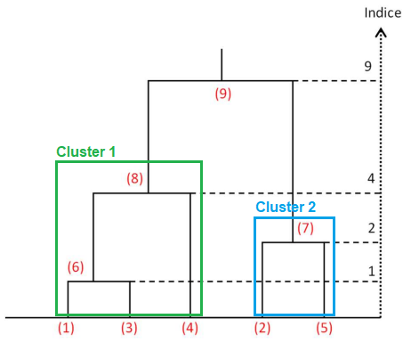
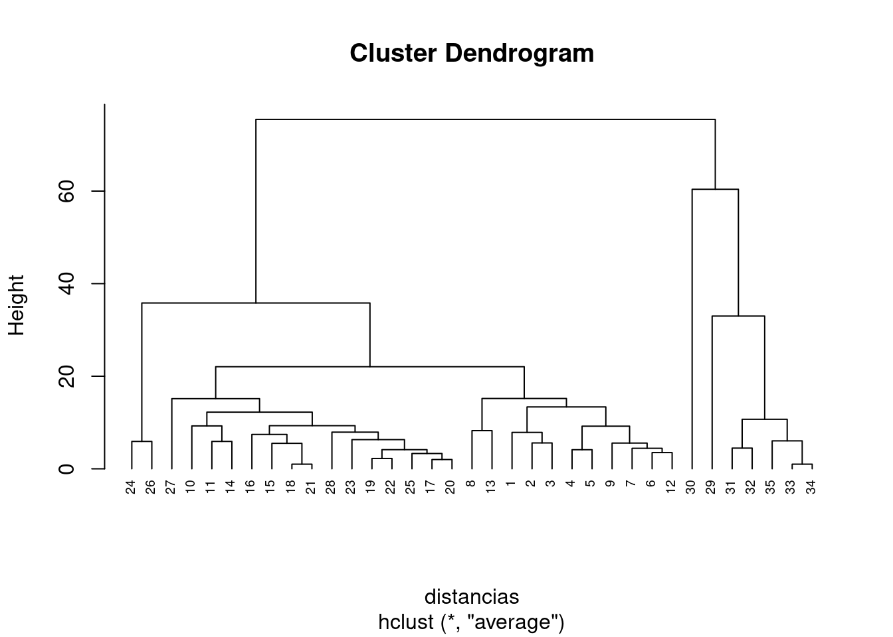
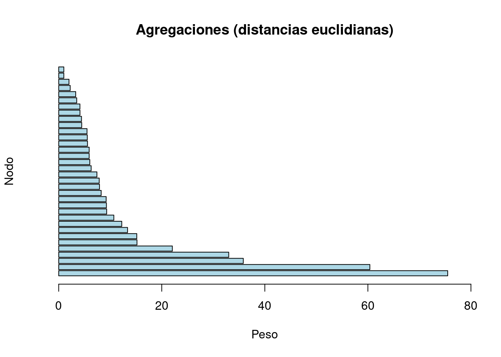
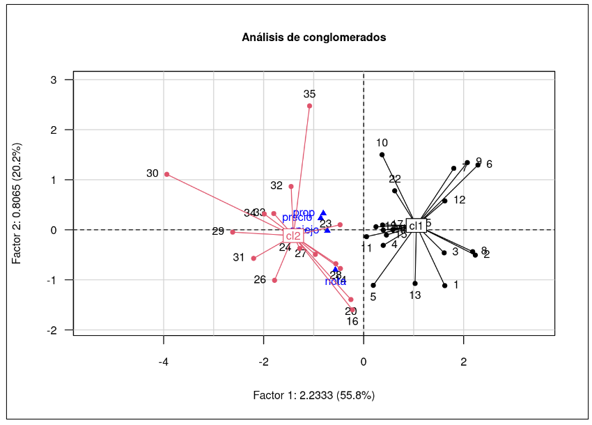

Análisis de Conglomerados
Modelos Estadísticos para la toma de decisiones
Introducción
El análisis de conglomerados, también conocido como clustering, es un método estadístico usado para agrupar objetos similares en función de sus características. Mediante este análisis se logra identificar grupos muy parecidos (homogéneos) de objetos o individuos. Dentro de cada grupo los objetos son más similares entre sí que con los de otros grupos. El análisis de conglomerados implica la selección de un conjunto de variables para medir las características de los objetos o individuos, y luego aplicar un algoritmo de agrupamiento para clasificarlos en conglomerados. Los algoritmos de agrupamiento utilizados pueden ser jerárquicos o no jerárquicos, dependiendo de si los grupos se construyen de forma iterativa a partir de subgrupos más pequeños.
Supuestos y requisitos
El análisis de conglomerados se basa en calcular distancias utilizando las componentes principales calculadas mediante ACP, estas distancias serán equivalentes a calcularlas mediante la matriz original \(X\), una vez encontrados los conglomerados o grupos se procede a representar el primer plano factorial, por lo que los supuestos del análisis de conglomerados serán los mismos del análisis de componentes principales.
Modelo
Existen dos tipos de clasificación automática: los métodos no jerárquicos los cuales se basan en encontrar la mejor partición del conjunto de individuos en \(q\) clases, en donde sus centros de gravedad se eligen en un inicio de forma aleatoria. Por otra parte están los métodos jerárquicos en los cuales se construye un dendograma en el cual se forman los grupos de individuos más parecidos, esto permite determinar el número de clases que se usarán en el método no jerárquico.
Mediante el análisis de conglomerados se desea clasificar a los distintos individuos u observaciones en grupos muy homogéneos, pero heterogeneos entre ellos. Para realizar este objetivo se utilizan métricas que perminten calcular el grado de asociación (similitud o disimilitud) entre dos observaciones, dentro de las más usada está la distancia euclidiana entre los dos puntos, la cual está dado por:
\[ d(x, y) = \sqrt{\sum_{i=1}^{p} \Big(x_i - y_i\Big)^2} \]
En donde \(x\) y \(y\) son individuos con \(p\) variables, de esta forma podremos
obtener los dos primeros individuos que más se parezcan entre sí,
formarán el primer grupo. Sean entonces \(h =
\{x, y\}\) un grupo y \(z\) un
individuo, con los que se puede calcular la distancia entre el grupo y
el individuo de la forma: \(d(h, z) =
min\{d(x,z), d(y, z)\}\). Además hay otras formas de medir la
proximidad entre elementos como pueden ser el salto mínimo (single
linkage), salto máximo, salto promedio y agregación de Ward.
El siguiente dendograma fue construido a apartir de 5 individuos:

En este diagrama se observa que al inicio los individuos que más se parecen (menor distancia euclidea) son los individuos (\(1\)) y (\(3\)) los cuales tuvieron una distancia de \(1\). El siguiente grupo a formarse lo conforman los individuos (\(2\)) y (\(5\)) con una distancia de \(2\), el siguiente nodo a formarse está conformado por el grupo {\(1, 3\)} y el individuo (\(4\)) con una distancia de \(4\).
Elegir el número óptimo de clusters o grupos es una decisión subjetiva, sin embargo puede tomarse el criterio del mayor salto de nodo a nodo de las distancias euclidianas: Observando el dendograma vemos que el mayor incremento de las distancias se dio en \(4\), por lo que si trazamos una linea se hará un corte y tendremos dos nodos, el conformado por {\(1,3,4\)} y el otro con {\(2,5\)}.
Otro método de agrupamiento es el \(k-means\) (o centros moviles), este se centra en dividir un conjunto de datos en \(k\) grupos. En este se trata de minimizar la suma de los cuadrados de las distancias entre los puntos y su centroide correspondiente, los pasos en este algoritmo son:
- Selecciona \(k\) centroides aleatorios de los puntos en el conjunto de datos.
- Asigna cada punto al centroide más cercano.
- Recalcula los centroides como la media de los puntos asignados a cada centroide.
- Repite los pasos \(2\) y \(3\) hasta que los centroides no cambien significativamente o se alcance un número máximo de iteraciones (es decir, el algoritmo converja).
- El número k de clusters se debe especificar antes de ejecutar el algoritmo.
Ejemplo
El siguiente ejemplo en R cuenta con un conjunto de
datos sobre \(35\) observaciones de
whiskys, que contiene las variable precio,
proporción de alcohol, años de añejo y la
nota que le da el jurado a la calidad de estos.
data = read.table("whisky.txt", header = TRUE, row.names = 1)
head(data)## precio prop aniejo nota
## 1 70 20 5.0 3
## 2 60 20 5.0 2
## 3 65 20 7.5 2
## 4 74 25 12.0 2
## 5 70 25 12.0 3
## 6 73 30 5.0 0Mediante la libreria factoextra podemos calcular las distancias euclidianas de los individuos y gráficar el dendograma del conjunto de datos:
library(factoextra)
distancias <- dist(data, method = "euclidean")
dendograma <- hclust(distancias, method = "average")
plot(dendograma, cex = 0.6, hang = -1) 
barplot(sort(dendograma$height, decreasing = TRUE), horiz = TRUE,
main = "Agregaciones (distancias euclidianas)",
col = "lightblue", ylab = "Nodo", xlab = "Peso", xlim = c(0, 80))
Podemos observar que el mayor salto en las agregaciones se da en 60.38, por lo que se puede realizar un corte con este valor en el dendograma, quedando:
fviz_dend(dendograma, k=2, cex = 0.5,
k_colors = c("red", "blue"),
color_labels_by_k = TRUE,
rect=TRUE)
En este caso el número optimo de grupos o clusters será de 2. Con el siguiente código podemos ver en la primera fila los individuos y en la segunda los clusters a los que estos pertenecen.
grp <- cutree(dendograma, k = 2)
grp## 1 2 3 4 5 6 7 8 9 10 11 12 13 14 15 16 17 18 19 20 21 22 23 24 25 26
## 1 1 1 1 1 1 1 1 1 1 1 1 1 1 1 1 1 1 1 1 1 1 1 1 1 1
## 27 28 29 30 31 32 33 34 35
## 1 1 2 2 2 2 2 2 2La libreria FactoClass para representar los clusters en
el primer plano factorial, en la función FactoClass tenemos
los siguientes argumentos:
nf: número de componentes principales, recordemos que en el acp este será igual al número de variables.nfcl: número de componentes usadas para clasificación, en este caso será igual anf=p.k.clust: número de clusters, en este caso mediante el dendograma elegimos dos clusters.
library(FactoClass)
p = ncol(data)
Cluster <- FactoClass(data, dudi.pca, nf = p, nfcl = p, k.clust = 2, scanFC = FALSE)## The number of retained axes for factorial analysis is 4
##
## The number of axes for clustering is 4## Look the histogram of 25 indexes
## Partition in 2 clustersplotFactoClass(Cluster,title="Análisis de conglomerados")